Minha apresentação sobre o que envolve a Gestão de Mudanças num projeto de implantação de software
Conceitos de Market Basket Analysis
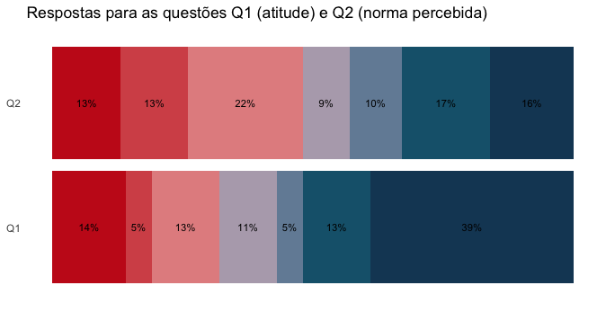
Neste post vamos falar sobre a apresentação visual de resultados de pesquisas com perguntas no estilo likert
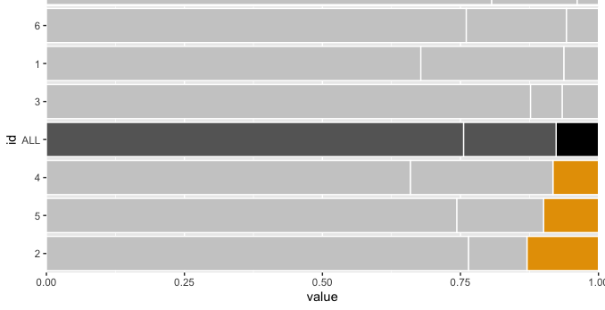
Storytelling faz com que sua mensagem seja mais efetiva. Mas como contar uma história ao criar um gráfico para ler dados?
Minha abordagem do tema
Procedimento para validar a adequação de um modelo baseado em dados falsos
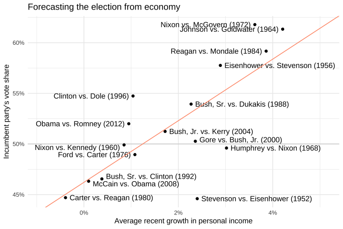
Alguns exemplos de regressão linear em R e tidymodels
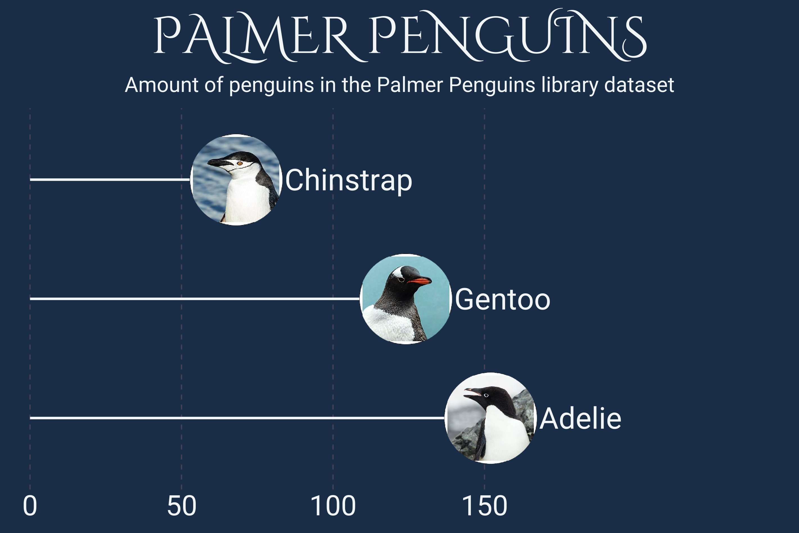
Este post mostra como construir um geom_segment com um ggimage. Também tem dica de como usar fontes e formatar o tema do gráfico
ITIL v4 - Conceitos de valor e cadeia de valor
Por que precisamos da LGPD?
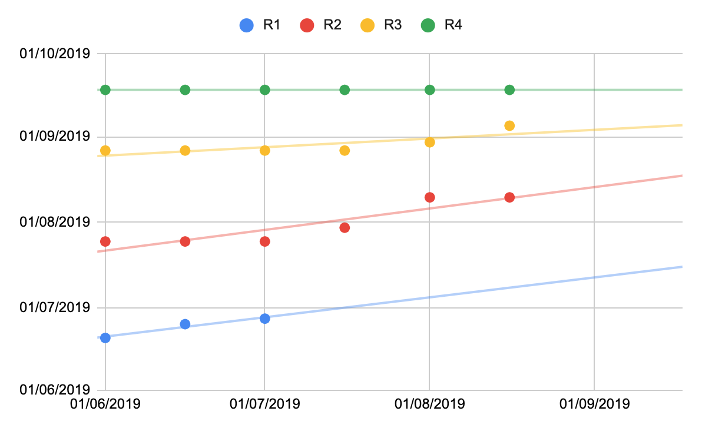
Um gráfico de tendência com datas é uma ferramenta para ajudar na análise da performance do trabalho.
Esta técnica ajuda a visualizar a expectativa para término do trabalho.
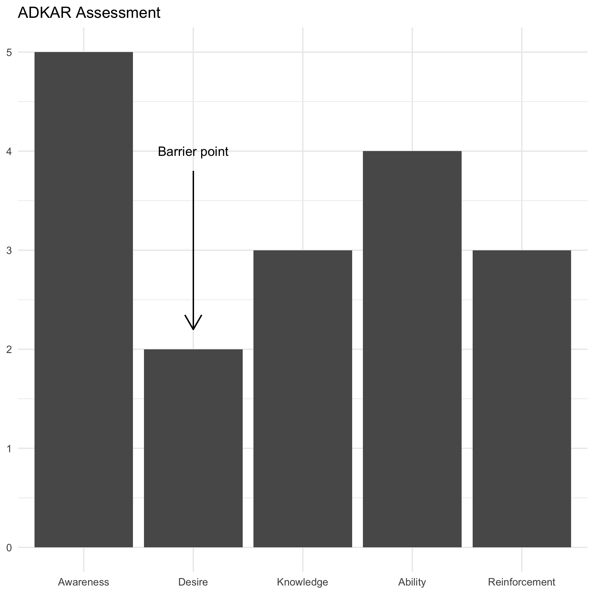
A estrutura da gestão de mudanças através dos modelos da empresa Prosci, incluindo ADKAR, PCT e Ciclo de Vida.
Dumbbell plots are good to compaire different values of a measurement, showing difference. Similar to dodged bar charts, but much better
Uso do pacote gtExtrsa para formatar tabelas
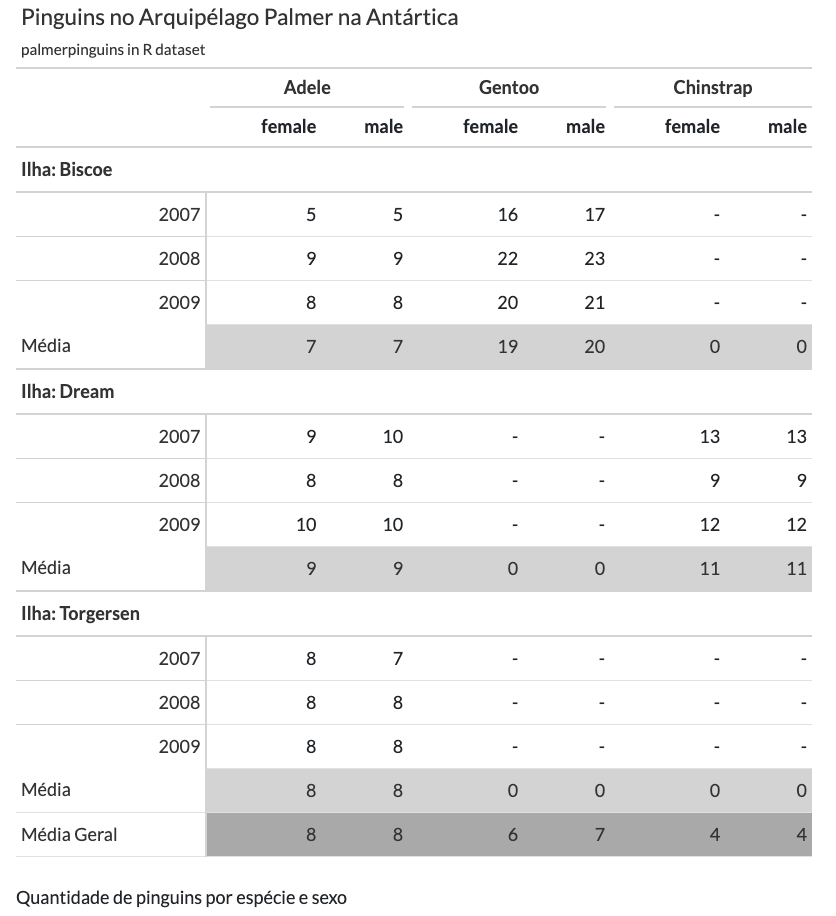
Uso do pacote gt para formatar tabelas
pivot_wider com mais de uma coluna
How to estimate the number of bugs in a software deploy
Lookahead concept in the Last Planner System
Rstat - uso do ggplot2 com paletas de cores customizadas para variáveis discretas e contínuas nas estéticas colour e fill.
A check-list of what must be remembered in a CM process
First post in my new Quarto blog
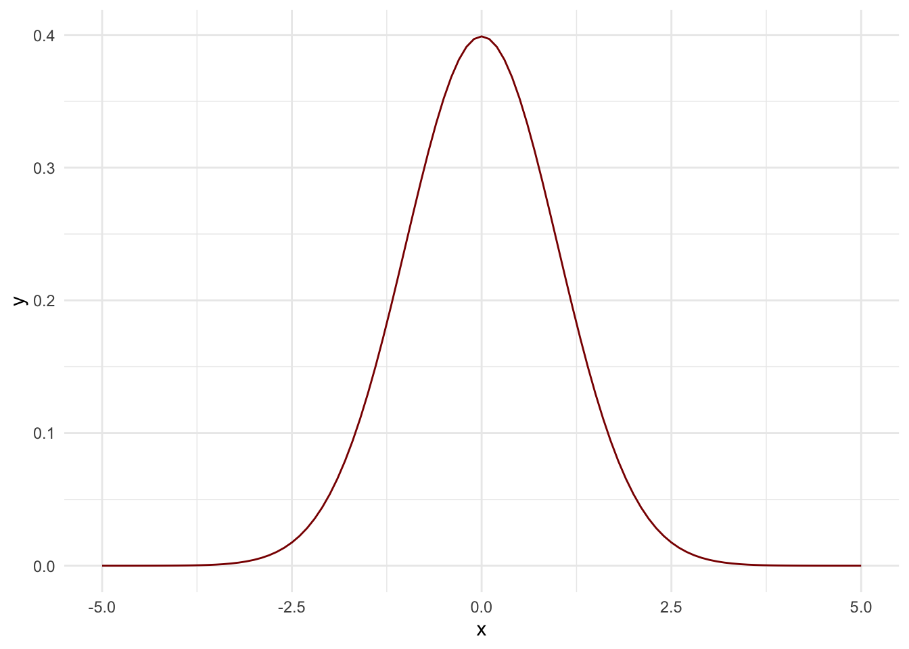
Drawing basic curves with ggplot2
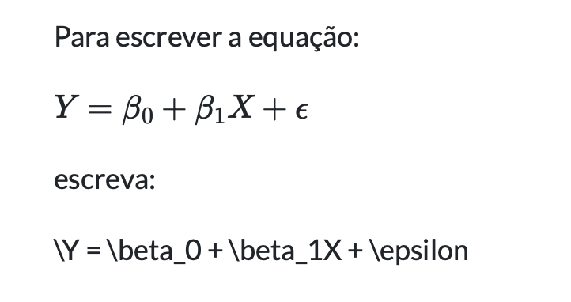
How to write math equations and cool stuf with Rmarkdown
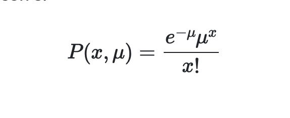
Alguns exemplos de comom usar a distribuição de Poisson e como calcular com R
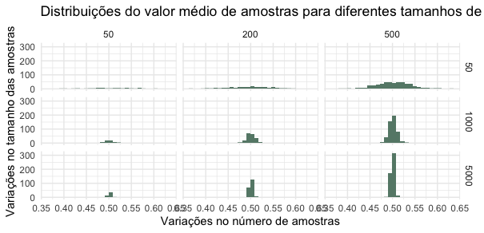
Sobre o Teorema Central do Limite
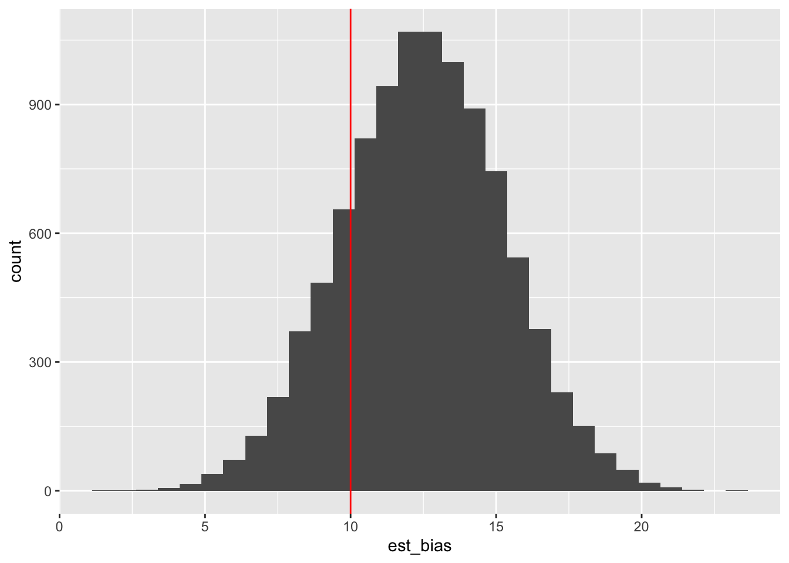
Estimadores estatísticos
Uma descrição de quais são os fatores que constituem o indicador de intenção de mudança.
Rstat - Counting percentual function with curly-curly
Pesquisas de opinião - vamos às compras